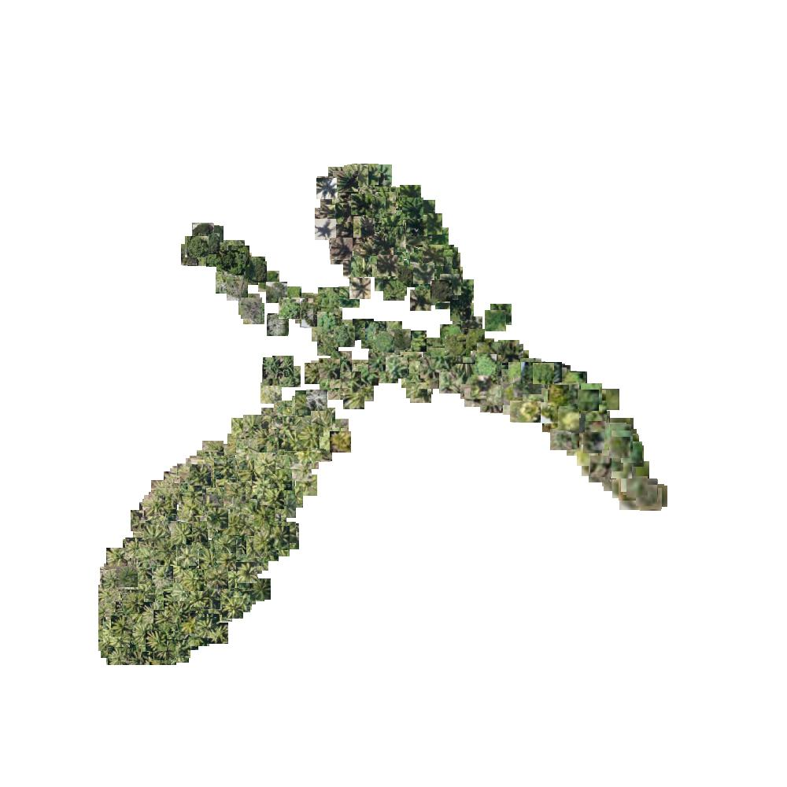

Introduction
This tutorial shows how you can perform unsupervised clustering on tree predictions.
Overview
Something that is often useful for downstream work like species prediction is clustering. Our goal is to take a set of predictions (instances) and
Generate some predictions
We'll use the benchmark image from Werobotics for this tutorial. First, let's set up some data, we download the test image from OpenAerialMap and reproject it to 0.1 m:
IMG_URL=http://oin-hotosm.s3.amazonaws.com/5a28639331eff4000c380690/0/5b1b6fb2-5024-4681-a175-9b667174f48c.tif
IMG_ROOT=./benchmarks/tonga/5b1b6fb2-5024-4681-a175-9b667174f48c
PROJECTED=$IMG_ROOT"_proj_10.tif"
wget -t0 -c -o $IMG_ROOT.tif $IMG_URL
tcd-reproject $IMG_ROOT.tif
The use of bash variables here is to save space in the following commands:
tcd-predict restor/tcd-segformer-mit-b5 $PROJECTED ./cluster_example
tcd-predict instance $PROJECTED ./cluster_example --filter ./cluster_example/canopy_confidence.tif
This will perform a tiled prediction, filtering instances based on semantic segmentation confidence and store the results to a folder called cluster_example. On a high-end GPU this will take ~10-15 minutes; you can save some time if you disable test time augmentation.
Generate embeddings
Now we have predictions, we can run:
tcd-cluster ./test_tonga/instances_filtered.shp $PROJECTED ./test_tonga/embedding --project --plot --examples 1000
By default the clustering tool uses BioCLIP, a foundational vision model trained on huge amounts of data from iNaturalist/GBIF. It works particularly well for natural imagery, though you can try other models that are hosted by open_clip by passing the --model argument.
The script will:
- load the shapefile and source image
- generate crops from the source raster[^1]
- compute and store embeddings using the selected model
- optionally train a UMAP projection and store the model
- store the projections
- optionally plot crops in the 2D embedding space for inspection
The script will check for an existing embedding file, so pass --overwrite if for example you've re-run the model and have a different prediction set.
View the results
The results show a nice separation between palm trees and other species in the image.

Perform knn-clustering and retrieval
Now we have an embedding list, we can cluster the data using an algorithm like K-Nearest Neighbour and then provide a query image to look for similar trees. This is a type of simple visual search and in some cases it can be quite effective for tasks like species prediction.
Species prediction
For this image, we can also try to do some zero-shot classification using BioCLIP. We know the species for the ground truth data and we can combine this with our predictions to extract instance masks for each species. Our assumption is predicted tree instances that have a single ground truth keypoint inside them are probably correct. Then, we'll extract embeddings just for these objects, train a k-means classifier(since we know the number of classes) and then perform a k-fold cross-validation to check how well we do. It is unclear whether the annotators attempted to label 100% of trees with the species listed in the ground truth, so we can't necessarily run our classifier on the remainder of the image and assume it will pick out new trees.
^1: currently this runs in-memory so you need at most as much RAM as it takes to load the source itself.